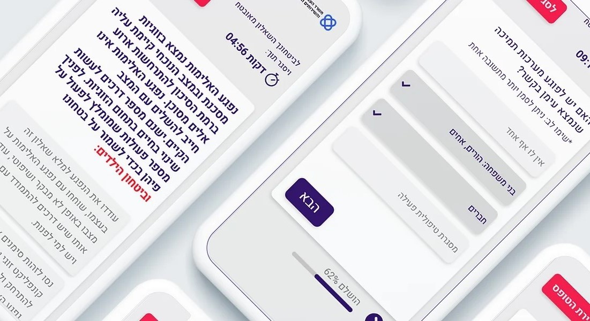
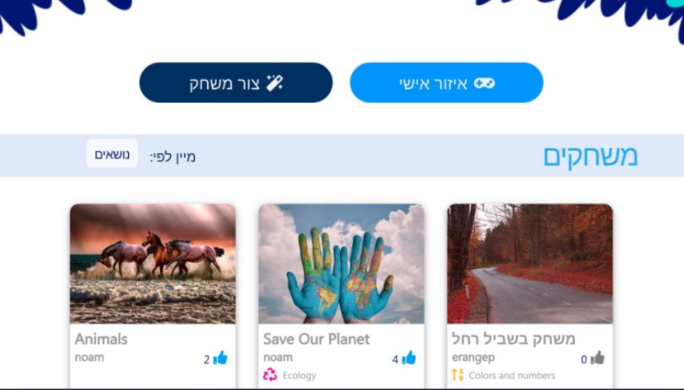

🌟 Description:
We developed a multilingual risk questionnaire to empower victims and their relatives to assess the risk status of marital relationships or family members independently. Teaming up with a colleague at Hilma, our solution combines expertise in domestic violence treatment with cutting-edge technology.
💡 Our Solution:
Our questionnaire, crafted by experts, guides users through questions to collect data and index systems. Upon completion, users receive immediate feedback and personalized assistance. Utilizing innovative technology, the questionnaire ensures user privacy and safety by disconnecting and erasing responses after completion.
👥 Collaborative Effort:
Partnering with a colleague enriched our project, combining expertise in technology and social services to address a critical societal issue while prioritizing user safety.
🌐 Impact and Future:
Our solution represents a significant step forward in supporting victims of domestic violence. Moving forward, we're committed to refining and expanding to reach more communities and make a tangible difference.
November 2019, April 2020
🌟 Description:
Amigo revolutionizes therapist-patient communication by enabling regular, personalized messages, tasks, and questions to be sent effortlessly, even to large groups of patients. The system monitors responses, identifying those in need of personal attention or assistance.
💡 How It Works:
Therapists schedule daily WhatsApp messages containing personalized greetings and questions tailored to each patient's well-being. The system tracks responses and alerts therapists to distress signals, facilitating immediate intervention if required.
👥 Management System:
Accompanying the messaging system is a comprehensive management platform where therapists can create diverse content, monitor patient progress, view statistical reports, and address flagged concerns.
🌐 Diverse Engagement:
Questions are curated by therapists to ensure variety and relevance, fostering ongoing patient engagement and empowerment. Patients interact via WhatsApp messages, accessing a chatbot for seamless communication.
🔔 Alert System:
Amigo's proactive approach ensures no patient is overlooked. If a response is not received, the system sends gentle reminders and alerts therapists, prompting them to check on the patient's well-being personally.

🌟 Description:
The Challenge: Many students struggle with traditional methods of learning English, often finding memorization tedious and uninspiring. Creatush addresses this issue by offering a personalized learning approach through interactive activities.
💡 Our Solution:
Creatush empowers students to create and share their own learning activities, fostering engagement and curiosity. Teachers evaluate these activities, providing feedback and facilitating peer learning. The user-friendly website streamlines the process, allowing students to easily prepare activities and learn from their peers.
👥 Collaborative Learning:
Creatush facilitates collaboration between students and teachers, enabling personalized assessment and guidance. Through this system, educators can monitor student progress, offer support, and foster a dynamic learning environment.
🌐 Impact and Future:
Our platform revolutionizes English learning by making it interactive, engaging, and tailored to individual needs. Moving forward, we aim to expand Creatush's reach and enhance its features to further empower students and educators worldwide.